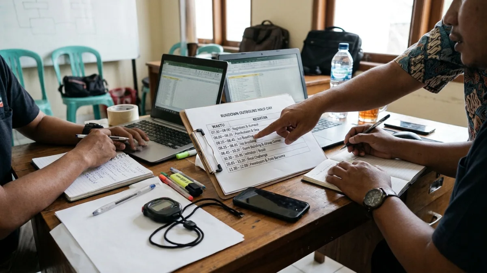

Permainan outbound Kediri Pare dipilih berdasarkan tujuan kelompok, mulai dari pemecah suasana, komunikasi, kepercayaan, hingga kepemimpinan, lalu disusun dalam rundown yang diakhiri sesi refleksi.
- Pilih permainan dari tujuan, bukan dari kesenangan semata.
- Rangkaian umum terdiri dari pemecah suasana, permainan komunikasi, kepercayaan, kepemimpinan, dan refleksi.
- Studi pada 13 pegawai di Sulawesi Selatan melaporkan peningkatan kohesivitas tim setelah pelatihan outbound.
- Rundown setengah hari cukup untuk satu rangkaian kegiatan yang padat dan aman.
- Sesi refleksi menentukan apakah permainan berubah menjadi pelajaran.
DAFTAR ISI
- 1. Apa Saja Jenis Permainan Outbound untuk Kelompok?
- 2. Bagaimana Memilih Permainan Sesuai Tujuan Kegiatan?
- 3. Apa Bukti Bahwa Outbound Dapat Meningkatkan Kerja Sama Tim?
- 4. Seperti Apa Contoh Rundown Outbound Setengah Hari?
- 5. Bagaimana Memimpin Sesi Refleksi Setelah Permainan?
- 6. Apa yang Perlu Disiapkan Sebelum Menjalankan Permainan Outbound?
- 7. Kesimpulan
- 8. FAQ
Apa Saja Jenis Permainan Outbound untuk Kelompok?
Jenis permainan outbound untuk kelompok meliputi pemecah suasana, permainan komunikasi, permainan kepercayaan, tantangan pemecahan masalah, simulasi kepemimpinan, dan lomba antartim yang dipandu fasilitator.
Pemecah suasana berupa permainan ringan seperti perkenalan kreatif atau tebak gerakan. Permainan komunikasi menuntut peserta menyampaikan instruksi dengan jelas, misalnya menyusun bentuk tertentu dengan mata tertutup berdasarkan arahan teman.
Permainan kepercayaan melatih peserta bergantung pada rekan satu tim, seperti memandu teman melewati rintangan.
Tantangan pemecahan masalah mengajak kelompok menyusun strategi bersama untuk memindahkan benda dari satu titik ke titik lain dengan aturan tertentu.
Simulasi kepemimpinan memberi kesempatan peserta bergantian memimpin, sedangkan lomba antartim menambah semangat selama tetap dikemas sehat.
Gambaran umum outbound, termasuk manfaat dan alurnya, dapat dibaca di panduan outbound Kediri Pare untuk sekolah, perusahaan, dan komunitas.
Bagaimana Memilih Permainan Sesuai Tujuan Kegiatan?
Memilih permainan outbound dilakukan dengan menetapkan tujuan lebih dahulu, lalu mencocokkan jenis permainan, tingkat tantangan, dan durasi dengan usia, jumlah, serta kondisi fisik peserta.
Bila tujuan adalah mencairkan suasana antarpeserta baru, mulai dengan pemecah suasana dan permainan perkenalan.
Bila tujuan memperbaiki komunikasi antarbagian, pilih permainan yang membutuhkan instruksi jelas dan pembagian peran. Bila tujuan membentuk calon pemimpin, pilih simulasi kepemimpinan yang bergantian.
Perhatikan pula kelompok usia. Anak sekolah dasar cocok dengan permainan singkat dan penuh gerak, sedangkan karyawan dewasa dapat diberi tantangan pemecahan masalah yang lebih panjang.
Peserta dengan keterbatasan fisik perlu mendapat peran yang tetap bermakna, bukan sekadar menjadi penonton.
Jumlah peserta menentukan format. Kelompok besar perlu dibagi menjadi tim kecil sekitar lima hingga sepuluh orang agar semua peserta aktif terlibat.
Apa Bukti Bahwa Outbound Dapat Meningkatkan Kerja Sama Tim?
Beberapa studi di Indonesia melaporkan bahwa outbound dapat meningkatkan kohesivitas tim, tetapi hasilnya bergantung pada rancangan kegiatan, kualitas fasilitasi, dan sesi refleksi yang menyertainya.
Penelitian Muis dan rekan yang dimuat di jurnal Devote melibatkan 13 pegawai unit teknis di Badan Kepegawaian Daerah Sulawesi Selatan. Hasil pre-test dan post-test dalam studi tersebut menunjukkan pengaruh pelatihan outbound terhadap peningkatan kohesivitas tim.
Studi lain pada sebuah perusahaan di Jawa Timur tidak menemukan pengaruh team building terhadap kohesivitas tim. Perbedaan hasil ini mengingatkan bahwa permainan saja tidak cukup.
Peserta perlu diberi ruang membahas pengalaman mereka agar pelajaran dapat dibawa ke pekerjaan sehari-hari.
Karena sampel kedua studi kecil, hasilnya sebaiknya dipahami sebagai indikasi, bukan jaminan.
Seperti Apa Contoh Rundown Outbound Setengah Hari?
Contoh rundown outbound setengah hari dimulai dari registrasi dan pengarahan keselamatan, lalu pemecah suasana, permainan inti, refleksi, dan penutupan dengan rencana tindak lanjut.
Berikut contoh urutan untuk kegiatan sekitar empat jam yang dapat disesuaikan:
- Registrasi dan pembagian tim, sekitar 20 menit.
- Pengarahan keselamatan dan tujuan, sekitar 15 menit.
- Pemecah suasana, sekitar 30 menit.
- Permainan komunikasi dan pemecahan masalah, sekitar 60 menit.
- Permainan kepercayaan atau kepemimpinan, sekitar 45 menit.
- Istirahat dan konsumsi, sekitar 30 menit.
- Refleksi kelompok, sekitar 30 menit.
- Penutupan dan komitmen, sekitar 15 menit.
Durasi hanya contoh dan dapat berubah sesuai jumlah peserta serta kondisi cuaca. Beri jeda cukup di antara permainan agar peserta tidak kelelahan.

Penyusunan rundown outbound setengah hari memastikan setiap sesi permainan dan refleksi berjalan efektif. (Ilustrasi)Bagaimana Memimpin Sesi Refleksi Setelah Permainan?
Sesi refleksi dipimpin dengan pertanyaan terbuka tentang apa yang terjadi, dirasakan, dan dipelajari, lalu bagaimana pelajaran itu diterapkan di sekolah, kantor, atau komunitas.
Fasilitator dapat memakai tiga langkah sederhana. Pertama, minta peserta menceritakan apa yang terjadi selama permainan. Kedua, ajak mereka membahas perasaan dan pola kerja sama yang muncul. Ketiga, minta setiap tim menyepakati satu kebiasaan yang akan diterapkan setelah kegiatan.
Hindari menyalahkan individu. Refleksi yang aman membuat peserta bebas berbicara tanpa takut dinilai. Jumlah pertanyaan tidak perlu banyak, yang penting setiap peserta berkesempatan menjawab.
Apa yang Perlu Disiapkan Sebelum Menjalankan Permainan Outbound?
Persiapan permainan outbound mencakup pemeriksaan area, peralatan, daftar peserta dan kondisi kesehatan, rencana cuaca, pengarahan keselamatan, serta penetapan tanda berhenti yang dipahami semua peserta.
Periksa area dari benda tajam, lubang, dan permukaan licin. Siapkan air minum dan kotak pertolongan pertama. Tanyakan kepada peserta apakah ada kondisi kesehatan yang perlu diperhatikan, seperti asma atau cedera lama.
Siapkan rencana cadangan bila hujan. Rincian tentang penilaian kesiapan penyedia dan pertanyaan keselamatan dibahas pada artikel cara memilih penyedia outbound di Kediri Pare.
Untuk gambaran komponen anggaran yang berhubungan dengan peralatan dan pendamping, baca juga biaya outbound di Kediri Pare dan faktor penentu harga paket.
Kesimpulan
Permainan outbound Kediri Pare efektif bila dipilih dari tujuan, dijalankan secara aman, dan diakhiri refleksi yang menghubungkan pengalaman dengan kegiatan sehari-hari peserta.
Mulailah dengan menulis tujuan, pilih dua sampai tiga jenis permainan yang relevan, susun rundown dengan jeda cukup, dan sisihkan waktu refleksi.